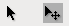

LiveCode
Dieser Artikel wurde für die folgenden Ubuntu-Versionen getestet:
Ubuntu 16.04 Xenial Xerus
Zum Verständnis dieses Artikels sind folgende Seiten hilfreich:
 LiveCode
LiveCode  ist eine integrierte Entwicklungsumgebung (IDE), mit der Anwendungen für Linux, Windows, MacOS, Android und iOS erstellt werden können. LiveCode ermöglicht aufgrund seiner grafischen Benutzeroberfläche mit WYSIWIG-Funktion, in welchem Erstellung und Testen einer Anwendung fließend ineinander übergehen, eine sehr flexible und schnelle Umsetzung von Programmprojekten ("Rapid Application Development").
ist eine integrierte Entwicklungsumgebung (IDE), mit der Anwendungen für Linux, Windows, MacOS, Android und iOS erstellt werden können. LiveCode ermöglicht aufgrund seiner grafischen Benutzeroberfläche mit WYSIWIG-Funktion, in welchem Erstellung und Testen einer Anwendung fließend ineinander übergehen, eine sehr flexible und schnelle Umsetzung von Programmprojekten ("Rapid Application Development").
Häufige Anwendungsbereiche sind interaktive, multimediale Präsentationen, Spiele sowie Lernprogramme. Der einfache und übersichtliche objektorientierte Programmieransatz eignet sich unter anderem gut für den Schulunterricht. LiveCode gilt als einfach zu erlernende Programmierumgebung, da die aus Apples HyperTalk hervorgegangene Programmiersprache ist eng an die englische Umgangssprache angelehnt und aufgrund ihrer unmittelbaren Bildhaftigkeit leicht zu erlernen und vielfach selbsterklärend. Trotzdem bietet sie das Potenzial, um auch professionelle Software damit zu erstellen.
Geschichte¶
1987 lieferte Apple die Macintosh-Computer mit HyperCard aus. Ein kommerzieller Klon davon war MetaCard. MetaCard wurde von Cross Worlds Computing ab 2001 als Revolution auf kommerzieller Basis weiterentwickelt. 2010 änderte der Name zu LiveCode. Das Entwicklungssystem wurde ab 2013 über eine Kickstarter-Kampagne erheblich ausgebaut und als kostenfrei erhältliche Open Source Version sowie parallel als kommerzielle Version weiterentwickelt.
Installation¶
LiveCode ist nicht in den Paketquelle enthalten. Das Programm ist über die Download-Seite herunterladbar. Man muss auch für den kostenlosen Download einen Namen und eine E-Mail Adresse angeben, ohne ist ein Download nicht möglich.
Jetzt muss das Installationsprogramm ausführbar gemacht werden[2], dann kann man es zwecks Installation starten.
Sollte nach dem Programmstart nur ein weißer Bildschirm zu sehen sein, siehe: Problembehebung
Bedienung¶

Wenn das Programm gestartet wird[1], öffnen sich oben ein Menübalken und links eine Werkzeugpalette ("Tools").
LiveCode arbeitet mit der von HyperCard u.a. bekannten Metapher der Stapel. Ein Projekt entspricht einem Stapel aus Karten. Auf diesen Karten können durch ziehen und loslassen Objekte wie Bilder, Schaltflächen, Tasten, Felder, etc. angeordnet werden. Diesen Objekten können Aufgaben zugeordnet werden. Dabei kann mit einem einzigen Mausklick vom Programmier- in den Ausführungsmodus hin- und her gewechselt werden. Dies geschieht mit den beiden wichtigsten Tasten auf der Werkzeugpalette, die sich zuoberst befinden: "Run Mode" (links; ausführen) und "Edit Mode" (rechts; programmieren). 
Beispiel: "Hallo Welt!"¶
Im Menü "File" einen "New Stack" öffnen. Ein neuer Stapel wird erstellt.
Aus der Werkzeugpalette eine Taste ("Button") auf den Stapel ziehen.
Um die Eigenschaften dieser Taste mit dem voreingestellten Namen "Button" zu sehen und anzupassen, die Inspektorpalette aus dem Menü "Objekt" auswählen oder einen Doppelklick auf die Taste machen. Die Inspektorpalette öffnet sich.
In der Inspektorpalette im Feld "Name" den Wert von "Button" auf "Sag' hallo!" ändern.
Um der Taste eine Funktion zu geben, muss sie entsprechend programmiert werden. Dazu zuerst die Taste auswählen (Einmalklick) und dann nach dem drücken der rechten Maus-Taste
 den Menüpunkt "Edit Script" wählen. Es öffnet sich die Programmierumgebung ("Code Editor").
den Menüpunkt "Edit Script" wählen. Es öffnet sich die Programmierumgebung ("Code Editor").Die Zeilen 1 und 3 sind bereits voreingestellt mit den Befehlen "on mouseUp" und "end mouseUp". Somit wird der auf Zeile 2 noch einzugebende Befehl bei einem Mausklick auf die Taste ausgelöst. In diesem Beispiel wird nun Zeile 2 ergänzt mit "answer "Hallo Welt!"".
on mouseUp answer "Hallo Welt!" end mouseUp
Oben links wird nun auf "Apply" geklickt, in der Werkzeugpalette auf ausführen gewechselt und die Taste "Sag' hallo!" angeklickt. Es öffnet sich ein Dialogfenster mit der Nachricht "Hallo Welt!" angezeigt.
In der Inspektorpalette des Stapels dem Stapel einen Namen geben.
Um selbständige Anwendungen zu erstellen, im Menü "File" das Untermenü "Standalone Application Settngs..." wählen. Das folgende Fenster enthält bereits die Voreinstellungen, die angepasst werden können. Je nach dem, welche Markierfelder angekreuzt sind, werden selbständige Anwendungen für Android, iOS, Linux, Macintosh (Universal, PPC, Intel) und Windows erstellt. Zum Schluss im Menü "File" das Untermenü "Save as Standalone Application..." wählen.
Problembehebung¶
Weisser Bildschirm nach Programmstart¶
Mit Alt + Tab ⇆ LiveCode Fenster wählen
Im Menü: "View -> Backdrop" den Haken entfernen
Links¶
livecode.org
- LiveCode open sourcelivecode-blog.de
 - Deutschsprachiger LiveCode-Blog
- Deutschsprachiger LiveCode-Blogpgcps.org/livecode
- Erste Schritte (Beispiele aus dem Informatikunterricht einer amerikanischen Sekundarschule)https://erhs.shaosean.tk
- Einfache Beispiele zum anschauen, inklusive dem Codehttp://live-code.net/livecode-tutorial.html
- Einige Tutorials leicht verständlich erklärt, inklusive Code zum download.https://www.youtube.com/watch?v=N93qGiCmdtQ
- Video zur GUI Erstellung am Beispiel eines Taschenrechners
- Erstellt mit Inyoka
-
 2004 – 2017 ubuntuusers.de • Einige Rechte vorbehalten
2004 – 2017 ubuntuusers.de • Einige Rechte vorbehalten
Lizenz • Kontakt • Datenschutz • Impressum • Serverstatus -
Serverhousing gespendet von